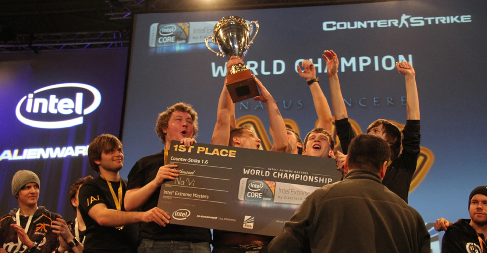
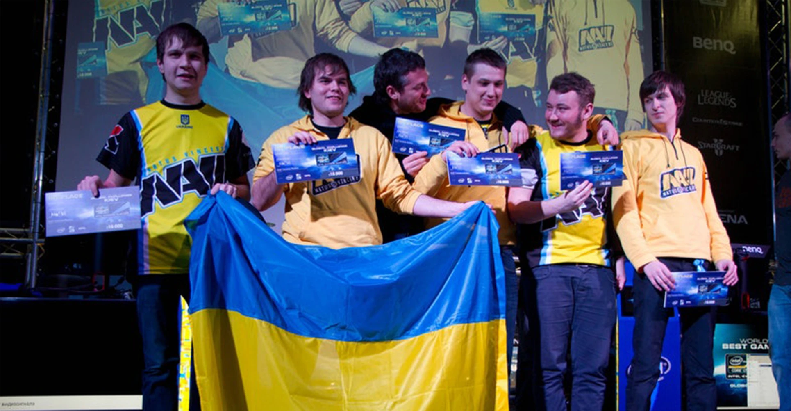
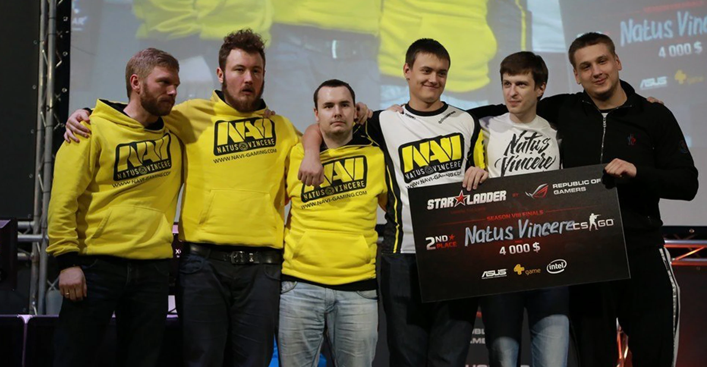
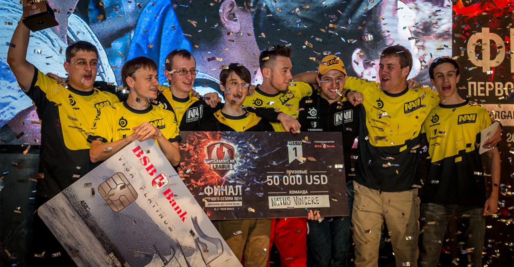

Трофеї які добула команда NAVI

2010 рік
За 2010 рік NAVI завоювали 12 медалей, 8 з яких — золоті, і в них з'явилась ціла армія фанатів.

2011 рік
Головною кіберспортивною подією 2011 року став The International — турнір в Dota 2 з рекордним на той час призовим фондом в розмірі $ 1 000 000.

2011 рік
У 2012 році Natus Vincere вдалося вийти у фінал шести великих турнірів і двічі стати чемпіонами!

2013 рік
За чотири наступні роки танкова дружина Natus Vincere виграла більше ніж 20 міжнародних нагород і $ 350 000 на турнірах

2014 рік
У 2014 році було оголошено про створення другого, американського, Dota-підрозділу Natus Vincere. Обидві команди взяли участь у The International 2014, але посісти місце серед найкращих не змогли.